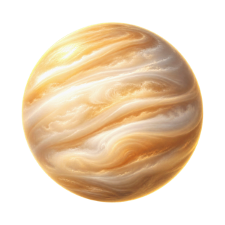

Blog
Famous Kundalis.
Reported birth details with their confidence, the chart computed, and public events laid against the dashas. Interpretation is kept in its own voice.
Steve JobsLeo rising
MS DhoniGemini rising
Indira GandhiCancer rising
Rajiv GandhiLeo rising
Donald TrumpLeo rising
Barack ObamaCapricorn rising
Tiger WoodsVirgo rising
Britney SpearsVirgo rising
Muhammad AliCancer rising

Prince Harry and MeghanAshtakoota 17.5 of 36
Brad Pitt and Angelina JolieAshtakoota 21.5 of 36
Charles and DianaAshtakoota 21 of 36